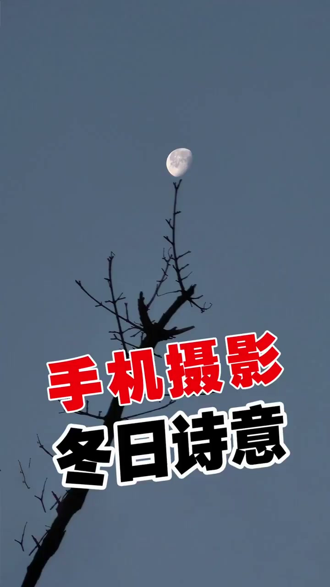
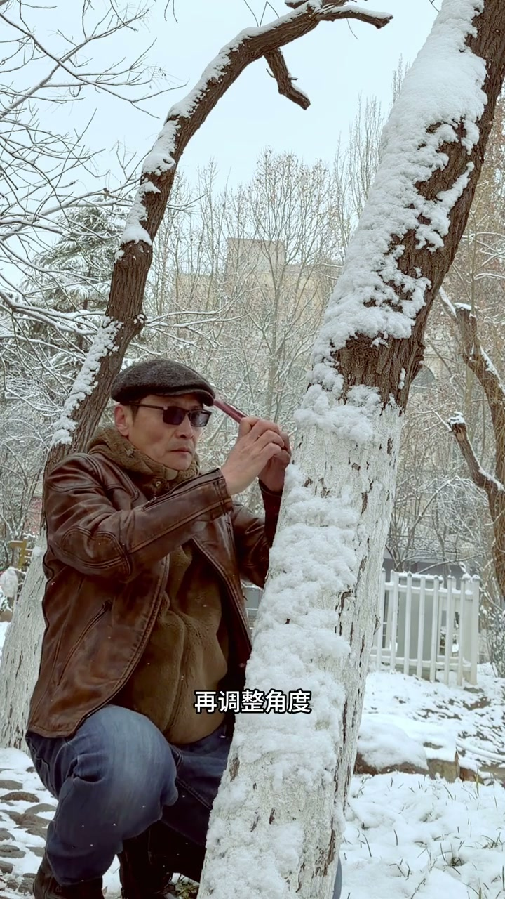

内容要点
这段视频围绕「用手机拍出诗意感」展开，按时间介绍其中的关键环节。怎么把这个小树林拍出花艺杆大片儿。
开场引入
怎么把这个小树林拍出花艺杆大片儿。不少人都是拿出手机就拍。没啥问题。就是真实。不懂摄影的人拍的是真实。懂摄影的人拍的是失忆。我会走进小树林。走到一棵树田。养世观察。把树干看成一根粗线条

关键技巧展开
拍出残知湛雪为洞笔。满写云箭带春提。再拍两棵树。寻找两棵树的布局关系。再拍更多树的秩序关系。慢慢的感受。双风过处。万只空。寿影横斜水莫同。东莱不是七两次

总结
拍出残知湛雪为洞笔。